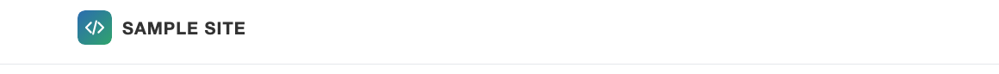
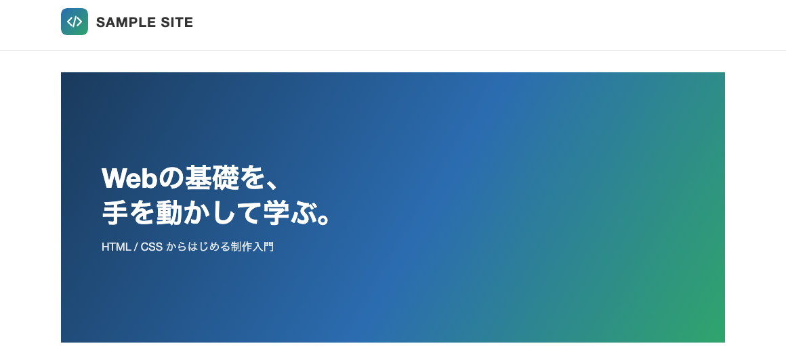
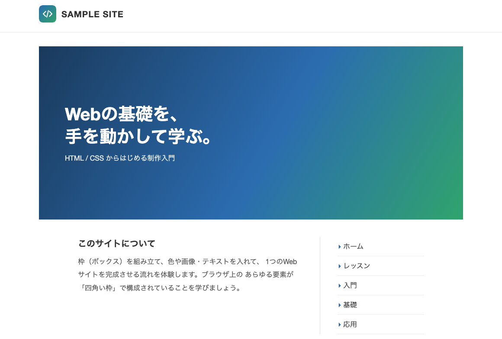

目次
このページでは、これまでに組み立てた「枠（ボックス）」の中に、ロゴ画像・背景色・背景画像・テキスト・リストを入れていき、1つの完成した「SAMPLE SITE」を作り上げます。
14. 枠の中に画像や色を入れる
前のページで用意した「枠（ボックス）」の中に、いよいよ中身を入れていきます。まずは画像と色です。画像の表示には大きく2つの方法があります。
HTMLの <img> タグ
画像そのものを1つの部品として枠の中に「置く」方法です。ロゴやアイコンなど、画像単体を表示したいときに使います。
CSSの background プロパティ
枠の背景として画像を「敷く」方法です。画像の上に文字を重ねて表示したいときに向いています。
この章で使うロゴ画像は、下のボタンからダウンロードできます。ダウンロードして展開し、出てきた
images フォルダを index.html と同じ場所に置きましょう。ロゴ画像を <img> で置く
ヘッダーの logo という枠の中に、<img> タグで画像を、続けてサイト名の文字を入れます。src という属性は source（ソース＝元）の略で、表示する画像ファイルの場所を指定します。ここでは前ページで用意した「中央寄せの受け皿」である header_contents の中に logo を置いています（header_contents の役割は前ページを参照）。
1 2 3 4 5 6 7 8
<div class="header"> <div class="header_contents"> <div class="logo"> <img class="mark" src="images/logo_mark.svg" alt="" width="40" height="40"> <div class="name">SAMPLE SITE</div> </div> </div> </div>
CSSでは、親要素の logo に display: flex を指定して画像と文字を横並びにし、align-items: center で上下（天地）の中央に揃えます。
1 2 3 4 5 6 7 8 9 10 11 12 13 14 15 16 17
.logo { display: flex; align-items: center; } .logo .mark { width: 40px; height: 40px; border-radius: 8px; margin-right: 12px; } .logo .name { font-size: 20px; font-weight: bold; letter-spacing: 1px; }
alt 属性は、画像が表示できなかったときや読み上げ時に使われる「代わりのテキスト」です。ロゴマークのように装飾目的の画像では、あえて空（alt=""）にすることがあります。なお、
<img> の width・height 属性は、読み込み前にレイアウトのガタつきを防ぐための目安です。実際の表示サイズはCSSの .logo .mark でも指定しており、両方書かれていても問題ありません（参考）。

<img> のロゴマークとサイト名を入れ、flex で横並びにした状態。枠に背景色をつける
枠の背景色は background（または background-color）プロパティで指定します。ここではフッターの枠に濃い色（#222）を敷き、中の文字を display: flex と align-items: center、justify-content: center で中央に配置しています。
1 2 3 4 5 6 7 8 9 10 11
.footer { background: #222; color: #bbb; } .footer_contents { height: 90px; display: flex; align-items: center; justify-content: center; }
背景画像を敷いて文字を重ねる
メインビジュアルのように「画像の上に文字を重ねたい」ときは、CSSの background プロパティで背景画像として配置します。実習の素材では、背景画像の代わりにグラデーション（linear-gradient）をプレースホルダとして使っています。
1 2 3 4 5 6 7 8 9 10 11 12 13 14 15 16 17 18 19 20 21 22 23 24
.visual { height: 360px; margin-top: 32px; margin-bottom: 40px; background: linear-gradient(120deg, #1a3a5c 0%, #2b6cb0 55%, #30a46c 100%); display: flex; align-items: center; } .visual .copy { color: #fff; padding-left: 56px; } .visual .copy h1 { font-size: 38px; line-height: 1.3; } .visual .copy p { font-size: 16px; margin-top: 12px; opacity: .9; }

h1 の見出しを重ねた状態。
実際の写真を背景に使う場合は、background に画像のURLと表示方法をまとめて指定します。書き方は次のようになります。
background: url("../images/top_bg.jpg") no-repeat center center;| 指定 | 意味 |
|---|---|
url("../images/top_bg.jpg") |
背景に使う画像ファイルの場所 |
no-repeat |
画像を繰り返さない（タイル表示しない） |
center（1つ目） |
画像の左右の位置を中央にする |
center（2つ目） |
画像の上下の位置を中央にする |
パスの先頭にある
../（ドットドットスラッシュ）は「1つ前のフォルダ」という意味です。images/top_bg.jpg のように ../ が無ければ「今いるフォルダの中」を指します。style.css は css/ フォルダの中にあるので、そこから images/ フォルダに届くには、いったん ../ で1つ上（index.html のある階層）に戻る必要があります。同じロゴ画像でも、HTMLの
src は index.html から見た位置なので images/logo_mark.svg、CSSの url は css/style.css から見た位置なので ../images/… と、書き出す場所によってパスが変わる点に注意しましょう。
em という単位em は「1文字分の大きさ」を表す単位です。たとえば文字サイズが 32px のとき、行間 2em は 64px（32px × 2）になります。今回のサンプルでは使っていませんが、覚えておくと便利な単位です。
15. 枠の中にテキストとリストを入れる
次は、本文のテキストと、メニューのようなリストを枠の中に入れます。テキストの枠とメニューの枠を、flex を使って横並びにします。
テキストとメニューを横に並べる
1 2 3 4 5 6 7 8 9 10 11 12 13 14 15 16 17
<div class="text_wrapper"> <div class="text"> <h2>このサイトについて</h2> <p>枠（ボックス）を組み立て、色や画像・テキストを入れて、 1つのWebサイトを完成させる流れを体験します。ブラウザ上の あらゆる要素が「四角い枠」で構成されていることを学びましょう。</p> </div> <div class="menu"> <ul> <li>ホーム</li> <li>レッスン</li> <li>入門</li> <li>基礎</li> <li>応用</li> </ul> </div> </div>
リストのタグ
リストは <li> タグ（1項目）を、<ul> か <ol> で囲って作ります。<li> は必ずどちらかで囲みます。
| タグ | 読み方・意味 | マーカー |
|---|---|---|
<ul> |
unordered list（順序なしリスト） | 「・」などの記号 |
<ol> |
ordered list（順序ありリスト） | 1, 2, 3 … の数字 |
<li> |
list item（リストの1項目） | ― |
別のページへ移動させたいときは
<a> タグ（リンク）を使います。メニューの各項目を実際のページに繋ぐ場合は、<li> の中身を <a> で囲みます。
リストのCSS
リストのマーカー（先頭の記号）は list-style-type プロパティで変更できます（list-style は list-style-type などをまとめて指定できる省略形で、list-style: none と list-style-type: none は同じ意味になります）。ここでは list-style: none で標準のマーカーを消し、::before で「▸」を自分で付けています。
::before は、要素の前に飾りを差し込むための書き方（擬似要素）です。content プロパティで、差し込む文字（ここでは「▸ 」）を指定します。
1 2 3 4 5 6 7 8 9 10 11 12 13 14 15 16 17 18 19 20 21 22 23 24 25 26 27 28 29 30 31 32 33 34 35 36 37 38 39 40
ul { list-style: none; } .text_wrapper { display: flex; justify-content: center; margin-bottom: 44px; } .text { width: 560px; padding-right: 40px; border-right: 1px solid #ddd; } .text h2 { font-size: 20px; margin-bottom: 12px; } .text p { line-height: 1.9; color: #555; } .menu { width: 240px; padding-left: 40px; } .menu li { padding: 10px 0; border-bottom: 1px solid #eee; } .menu li::before { content: "▸ "; color: #2b6cb0; }

flex で横並びにした状態。| 値 | list-style-type での見え方 |
|---|---|
none |
マーカーを表示しない |
disc |
●（黒丸） |
circle |
○（白丸） |
decimal |
1, 2, 3 …（数字） |
16. シンプルなWebサイトの完成
最後に、確認用に付けていた不要な枠線（border）や仮のテキストを整理し、フッターの中身（footer_contents）まで仕上げます。これまでのHTMLとCSSをまとめると、次の完成コードになります。
完成版 HTML
1 2 3 4 5 6 7 8 9 10 11 12 13 14 15 16 17 18 19 20 21 22 23 24 25 26 27 28 29 30 31 32 33 34 35 36 37 38 39 40 41 42 43 44 45 46 47 48 49 50 51 52
<!DOCTYPE html> <html lang="ja"> <head> <meta charset="UTF-8" /> <meta name="viewport" content="width=device-width, initial-scale=1.0" /> <title>SAMPLE SITE</title> <link href="css/style.css" rel="stylesheet"> </head> <body> <div class="header"> <div class="header_contents"> <div class="logo"> <img class="mark" src="images/logo_mark.svg" alt="" width="40" height="40"> <div class="name">SAMPLE SITE</div> </div> </div> </div> <div class="contents"> <div class="visual"> <div class="copy"> <h1>Webの基礎を、<br>手を動かして学ぶ。</h1> <p>HTML / CSS からはじめる制作入門</p> </div> </div> <div class="text_wrapper"> <div class="text"> <h2>このサイトについて</h2> <p>枠（ボックス）を組み立て、色や画像・テキストを入れて、 1つのWebサイトを完成させる流れを体験します。ブラウザ上の あらゆる要素が「四角い枠」で構成されていることを学びましょう。</p> </div> <div class="menu"> <ul> <li>ホーム</li> <li>レッスン</li> <li>入門</li> <li>基礎</li> <li>応用</li> </ul> </div> </div> </div> <div class="footer"> <div class="footer_contents">© SAMPLE SITE</div> </div> </body> </html>
完成版 CSS
1 2 3 4 5 6 7 8 9 10 11 12 13 14 15 16 17 18 19 20 21 22 23 24 25 26 27 28 29 30 31 32 33 34 35 36 37 38 39 40 41 42 43 44 45 46 47 48 49
* { box-sizing: border-box; margin: 0; padding: 0; }
body {
font-family: "Helvetica Neue", Arial, "Hiragino Sans", Meiryo, sans-serif;
color: #333;
background: #fff;
}
a { color: inherit; text-decoration: none; }
ul { list-style: none; }
/* 内側の中身を980pxで中央寄せ（全幅の受け皿の中に置く） */
.header_contents, .contents, .footer_contents { width: 980px; margin: 0 auto; }
/* ヘッダー：全幅（下線が画面端まで）／中身はheader_contentsで中央寄せ */
.header { border-bottom: 1px solid #e5e7eb; }
.header_contents { height: 84px; display: flex; align-items: center; }
.logo { display: flex; align-items: center; }
.logo .mark {
width: 40px; height: 40px; border-radius: 8px; margin-right: 12px;
}
.logo .name { font-size: 20px; font-weight: bold; letter-spacing: 1px; }
/* ビジュアル：背景画像(プレースホルダ=グラデ)＋見出しオーバーレイ */
.visual {
height: 360px; margin-top: 32px; margin-bottom: 40px;
background: linear-gradient(120deg, #1a3a5c 0%, #2b6cb0 55%, #30a46c 100%);
display: flex; align-items: center;
}
.visual .copy { color: #fff; padding-left: 56px; }
.visual .copy h1 { font-size: 38px; line-height: 1.3; }
.visual .copy p { font-size: 16px; margin-top: 12px; opacity: .9; }
/* テキスト＋メニュー：flexで横並び */
.text_wrapper { display: flex; justify-content: center; margin-bottom: 44px; }
.text { width: 560px; padding-right: 40px; border-right: 1px solid #ddd; }
.text h2 { font-size: 20px; margin-bottom: 12px; }
.text p { line-height: 1.9; color: #555; }
.menu { width: 240px; padding-left: 40px; }
.menu li { padding: 10px 0; border-bottom: 1px solid #eee; }
.menu li::before { content: "▸ "; color: #2b6cb0; }
/* フッター：全幅（暗色帯が画面端まで）／中身はfooter_contentsで中央寄せ */
.footer { background: #222; color: #bbb; }
.footer_contents {
height: 90px;
display: flex;
align-items: center;
justify-content: center;
font-size: 13px;
}枠の中で文字の位置を細かく揃えたいときは、
align-items のほか、要素1つを個別に揃える align-self（例：align-self: flex-end で枠の下端に配置）も使えます。今回のサンプルでは使っていませんが、参考として覚えておきましょう。
完成イメージ
すべてのコードを反映すると、次のような「SAMPLE SITE」が表示されます。

使ったCSSプロパティ集計
このシンプルなWebサイトで使ったCSSプロパティと、その使用回数をまとめると次のとおりです。margin や padding、display、width・height などの「枠を組み立てる」プロパティが多く登場していることが分かります。
| プロパティ | 使用回数 |
|---|---|
margin | 8 |
font | 7 |
color | 6 |
display | 5 |
padding | 5 |
background | 3 |
width | 4 |
height | 4 |
align-items | 4 |
border | 3 |
justify-content | 2 |
line-height | 2 |
box-sizing | 1 |
border-radius | 1 |
letter-spacing | 1 |
opacity | 1 |
list-style | 1 |
Webサイトは、たくさんの「枠」を並べ・重ね、その中に色・画像・テキスト・リストを入れていくことで組み立てられます。使うプロパティの数は決して多くありません。まずはこの十数個を使いこなせれば十分です。